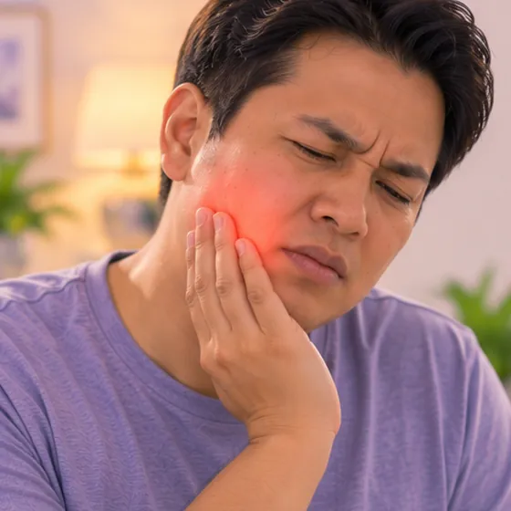

Jangkitan hujung akar gigi akut (periodontitis apeks)
Jangkitan dan bengkak mengejut di sekitar hujung akar gigi
Apa itu
Bakteria daripada gigi yang rosak boleh merebak ke tisu di sekitar hujung akarnya dalam tulang rahang. Ini boleh menyebabkan sakit apabila menggigit dan kadang-kadang gusi bengkak.
- Hujung akar gigi
- Boleh berlaku pada semua umur
- Sakit apabila menggigit
- Jumpa doktor
- Doktor gigi
- Biasa pada
- Sesiapa yang ada gigi reput dalam, saraf gigi mati atau pernah cedera gigi
- Berjangkit
- Tidak
- Perjalanan
- Perlukan doktor gigi; biasanya tidak sembuh sendiri
Tanda biasa

Sakit gigiOdontalgia 
Pipi atau rahang bengkakBengkak muka 
Nafas atau rasa mulut tidak enakHalitosis
Tanda-tanda lain
- Gigi terasa sedikit tinggi atau goyang
- Gusi bengkak dan sakit berhampiran gigi, kadang-kadang ada jerawat kecil
Mengapa ia berlaku

Kuman (jangkitan)Punca jangkitan
Punca lain
- Reput dalam yang sampai ke saraf dan mematikannya
- Gigi retak atau terhantuk
- Tampalan lama yang bocor atau rawatan gigi terdahulu
Jumpa doktor dahulu jika
- Muka, mulut atau leher bengkak, atau sukar menelan atau bernafas: ke hospital segera
- Demam dengan muka atau rahang bengkak
- Bengkak yang merebak atau sampai ke mata
- Kanak-kanak, warga emas atau pesakit diabetes dengan tanda ini: jumpa doktor gigi dengan segera
- Sakit kuat yang menghalang anda makan atau tidur
Jika mana-mana berkenaan, sila jumpa doktor sebelum sesi.
Halaman ini ialah maklumat am. Sila terus mengambil ubat biasa anda dan terus berjumpa doktor.
Teruskan mengambil ubat biasa anda dan terus berjumpa doktor. Sesi kami ialah sokongan lembut dan tidak menggantikan rawatan perubatan.
Menjaga diri

Jangan picit atau korekJangan sentuh 
Tanya ahli farmasiNasihat ahli farmasi
Lebih banyak cara menjaga diri
- Jumpa doktor gigi secepat mungkin; jangan tunggu sakit hilang sendiri
- Kunyah di sebelah lain dan pilih makanan lembut
- Berkumur perlahan dengan air suam dan berus dengan lembut
Beritahu ahli terapi anda
- Diabetes atau deria kulit berkurang
- Penyakit jantung
- Ubat pencair darah
- Kehamilan
- Alahan teruk
Ahli terapi anda akan menyemaknya bersama anda sebelum bermula.
Soalan dan jawapan
Apakah Jangkitan hujung akar gigi akut (periodontitis apeks)?
Jangkitan dan bengkak mengejut di sekitar hujung akar gigi. Bakteria daripada gigi yang rosak boleh merebak ke tisu di sekitar hujung akarnya dalam tulang rahang. Ini boleh menyebabkan sakit apabila menggigit dan kadang-kadang gusi bengkak.
Apakah tanda biasa Jangkitan hujung akar gigi akut (periodontitis apeks)?
Sakit gigi · Pipi atau rahang bengkak · Nafas atau rasa mulut tidak enak
Mengapa Jangkitan hujung akar gigi akut (periodontitis apeks) berlaku?
Kuman (jangkitan)
Bagaimana menjaga diri dengan Jangkitan hujung akar gigi akut (periodontitis apeks)?
Jangan picit atau korek · Tanya ahli farmasi
Bolehkah sesi AI Body Master membantu Jangkitan hujung akar gigi akut (periodontitis apeks)?
Sesi ialah sokongan meridian tanpa jarum yang lembut untuk kesejahteraan anda. Ia tidak merawat atau menyembuhkan Jangkitan hujung akar gigi akut (periodontitis apeks) dan tidak menggantikan ubat atau doktor anda. Beritahu ahli terapi anda sebelum sesi bermula.
Keadaan berkaitan
- Bibir mengelupas (keilitis eksfoliatif)
- Radang bibir (keilitis)
- Lidah geografik
- Jangkitan kulat dalam mulut (kandidiasis)
- Fluorosis gigi
- Ulser aftus berulang
- Soket kering (selepas cabut gigi)
- Sista periapikal (sista akar gigi)
- Penyakit Alzheimer
- Katarak
- Dermatitis seboroik (ruam jenis kelemumur)
- Keratosis tonsil
Rujukan: General information based on public health sources such as Mayo Clinic, NHS, Cleveland Clinic and NCBI StatPearls.
Halaman dikemas kini: 2026-11-05